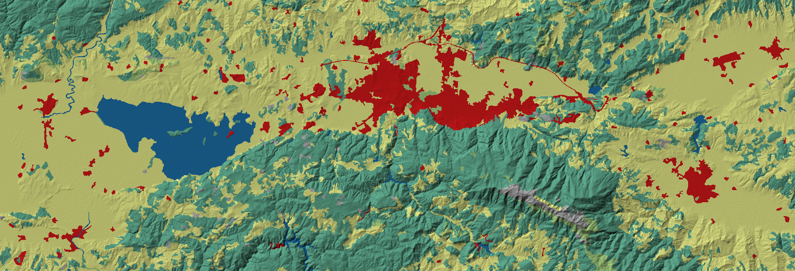
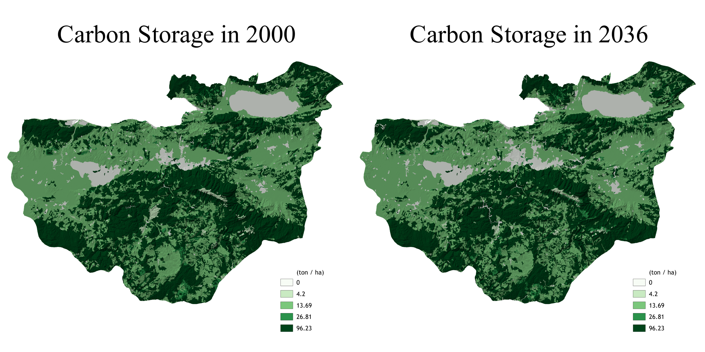
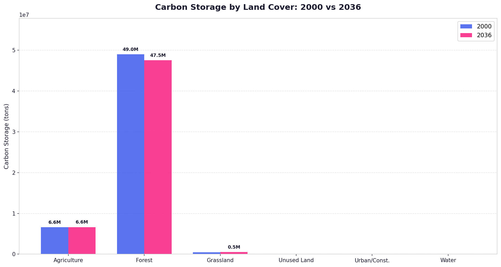
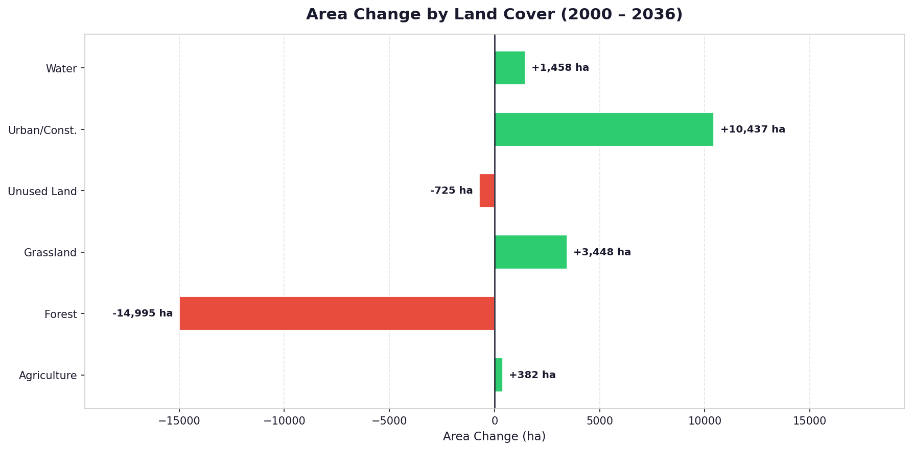
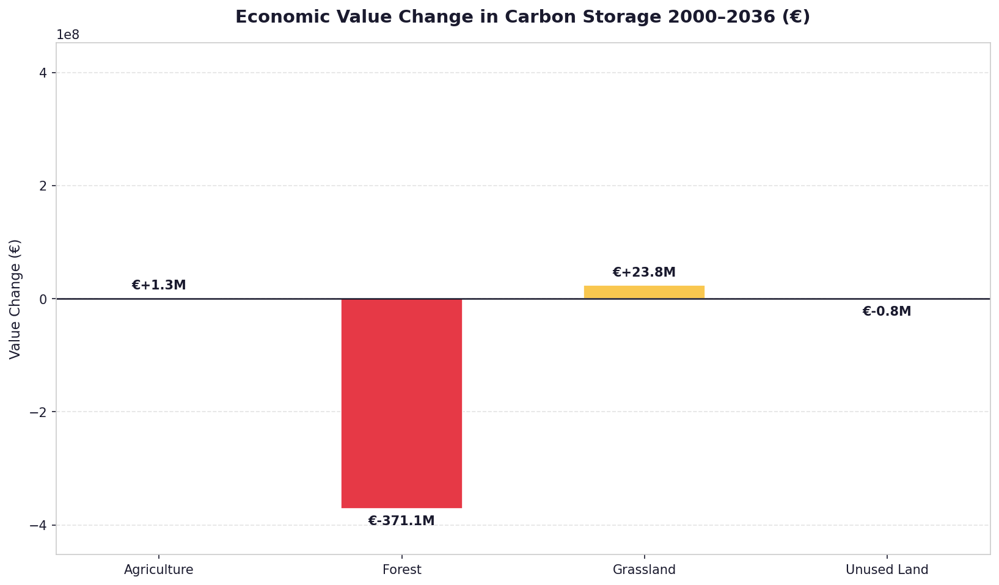

Urban Growth and Carbon Loss in Bursa
The Present and Projected Worth of Carbon Sequestration in Bursa
Abstract
This study assesses how projected urban expansion in Bursa reshapes land cover and, through that transition, the landscape's carbon storage and its economic value. A MOLUSCE land-cover change simulation (2000–2036) is integrated with InVEST carbon modeling and a review of statutory spatial plans. The analysis identifies forest decline as the dominant driver of carbon loss — despite relatively small spatial change — while grassland and agricultural expansion fail to compensate. Carbon stock changes are translated into monetary terms using an unadjusted, market-linked valuation proxied by the EU ETS price, reflecting the absence of an explicit carbon price in Türkiye. The findings argue that effective climate mitigation depends on protecting forests, concentrating urban growth within planned zones, and safeguarding productive landscapes.

1. Approach
| Component | Description |
|---|---|
| Approach | MOLUSCE simulation (2000–2036) integrated with InVEST carbon modeling and spatial plan review. |
| Focus | Urban expansion, forest loss, and carbon stock transition across metropolitan and rural systems. |
| Output | Land-cover prediction, gain–loss mapping, and carbon change assessment. |
2. Baseline Landscape Structure and Land-Cover Transition
The landscape is organized around three structural components:
- Urban core — the metropolitan activity center with high development pressure.
- Agricultural activity — productive land forming the economic backbone.
- Forest blocks — the primary carbon reservoirs with the highest ecological value.


3. Key Spatial Findings
Growth consolidates along high-accessibility corridors, reshaping land-cover composition toward built-up dominance.
Reduction in forest cover drives the majority of carbon loss despite relatively small spatial change.
Peri-urban zones and forest edges experience increasing ecological fragmentation and edge effects.
Grassland and agricultural expansion occurs but does not compensate for forest carbon loss.



4. Carbon Dynamics Insight
Each land-cover class plays a distinct role in the carbon budget:
| Land cover | Carbon role | Impact |
|---|---|---|
| Forest | Very high carbon density | Primary driver of carbon loss when converted. |
| Agriculture | Moderate carbon | Minor contribution; vulnerable to urban pressure. |
| Grassland | Low carbon | Limited compensation for carbon loss. |
| Unused land | Very low carbon | Potential reserve for development or restoration. |
| Urban | Minimal carbon | Dominant driver of land-cover transformation. |
| Water | Variable carbon storage | Ecological regulator, not a carbon driver. |
5. Economic Valuation of Carbon Change
The change in carbon stock per land-cover class is converted into monetary terms using a market-linked unit value. The economic value of carbon change is:
where $\Delta V$ is the change in carbon value (€), $\Delta C$ is the change in stored carbon expressed as CO₂-equivalent (tCO₂e), and $P_c$ is the carbon unit price (€ per tCO₂e).
Stored carbon is converted to CO₂-equivalent using the molecular-weight ratio of carbon dioxide to carbon:

6. Planning Interpretation
| Zone | Interpretation |
|---|---|
| Metropolitan core | Growth expected but must remain controlled and contained. |
| Agricultural districts | High risk of productivity loss due to land conversion. |
| Tourism & heritage areas | Require selective and conservation-oriented development. |
Conclusion
Effective climate mitigation depends on protecting forests, concentrating urban growth within planned zones, and safeguarding productive landscapes.